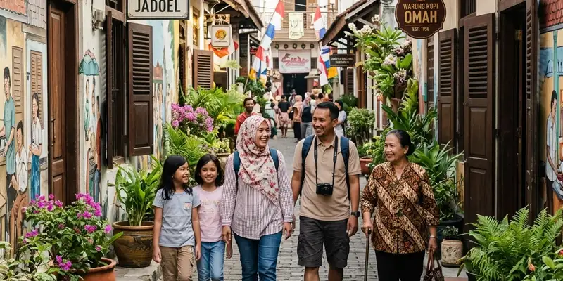

Wisata Malang kota dapat dimulai dari Kayutangan Malang, kawasan heritage berisi bangunan kolonial yang berlokasi di pusat kota, dan dapat dipadukan dengan trip ke Batu yang berjarak sekitar 17-20 kilometer untuk pengalaman liburan yang lebih lengkap.
Ringkasan Inti
- Kayutangan Malang adalah kawasan wisata heritage berisi rumah tua era kolonial yang berlokasi di pusat Kota Malang.
- Kawasan ini resmi menjadi destinasi wisata heritage sejak 2018 dan tercatat dikunjungi ratusan ribu wisatawan pada 2024.
- Wisata Malang kota dapat dipadukan dengan trip ke Batu yang berjarak sekitar 17-20 kilometer dengan waktu tempuh sekitar 30-60 menit.
- Kayutangan cocok dikunjungi sore hingga malam hari untuk menikmati suasana lampu temaram khas kawasan heritage.
- Kombinasi wisata Malang kota dan Batu memberikan pengalaman berbeda, mulai dari nuansa sejarah hingga udara pegunungan yang sejuk.
Apa Itu Kayutangan Malang dan Mengapa Menjadi Ikon Wisata Heritage Kota?
Kayutangan Malang adalah kawasan wisata heritage yang terletak di sepanjang Jalan Basuki Rahmat, pusat Kota Malang, berisi deretan rumah tua bergaya arsitektur Eropa yang menjadi saksi perkembangan kota sejak era kolonial Belanda.
Kawasan ini mencakup Kampung Heritage Kayutangan yang merupakan salah satu perkampungan tertua di Malang. Berdasarkan identifikasi yang pernah dilakukan, terdapat sekitar 60 rumah tua di kampung ini, dengan bangunan tertua tercatat dibangun pada tahun 1870, sementara sebagian besar rumah lain dibangun pada rentang 1920 hingga 1940 dengan gaya atap pelana yang dikenal sebagai rumah jengki. Kayutangan resmi ditetapkan sebagai destinasi wisata heritage sejak tahun 2018 dengan tujuan melestarikan warisan sejarah sekaligus mendukung ekonomi masyarakat sekitar.
Mengapa Kayutangan Menjadi Destinasi Populer bagi Wisatawan?
Kayutangan menjadi destinasi populer bagi wisatawan karena menawarkan pengalaman menyusuri sejarah kota Malang melalui bangunan kolonial, gang-gang tua, dan spot foto ikonik yang jarang ditemukan di kawasan perkotaan lain.
Data kunjungan menunjukkan popularitas kawasan ini. Berdasarkan keterangan DPRD Kota Malang pada 2025, jumlah kunjungan wisatawan ke Kayutangan Heritage mencapai 773.393 orang pada 2024, yang terdiri dari 488.429 kunjungan ke area koridor dan 284.964 kunjungan ke kawasan Kampoeng Heritage Kajoetangan. Selain itu, kawasan ini juga sempat masuk dalam jajaran 75 besar Desa Wisata Terbaik dalam Anugerah Desa Wisata Indonesia pada 2023.
Apa Saja Daya Tarik Utama Kayutangan Malang?
Daya tarik utama Kayutangan Malang meliputi rumah-rumah tua bergaya kolonial, sumur tua, lorong bermural, serta aktivitas ekonomi kreatif warga seperti kedai kopi dan galeri kecil di sepanjang kawasan. Beberapa daya tarik yang dapat dinikmati wisatawan antara lain:
- Rumah-rumah kuno dengan plakat informasi usia bangunan dan sejarah pemilik pertamanya.
- Gang-gang sempit bermural yang menceritakan sejarah kawasan sekaligus menjadi spot foto favorit.
- Kedai kopi dan galeri kecil yang dikelola warga sekitar sebagai bagian dari ekonomi kreatif kawasan.
- Suasana malam hari dengan pencahayaan lampu temaram yang mempertegas nuansa klasik kawasan heritage.

Menyusuri lorong-lorong asri di Kampung Heritage Kayutangan membawa wisatawan bernostalgia ke era tempo dulu.
Apa Saja Daya Tarik Wisata Malang Kota Selain Kayutangan?
Wisata Malang kota selain Kayutangan mencakup kawasan alun-alun kota, bangunan bersejarah lain di pusat kota, serta kuliner khas yang menjadi bagian dari identitas Kota Malang.
Kayutangan sendiri berlokasi tidak jauh dari alun-alun dan balai kota Malang, sehingga wisatawan dapat menggabungkan kunjungan ke beberapa titik wisata pusat kota dalam satu rangkaian perjalanan tanpa harus menempuh jarak yang jauh.
Bagaimana Cara Memadukan Wisata Malang Kota dengan Trip ke Batu?
Cara memadukan wisata Malang kota dengan trip ke Batu adalah dengan menjadwalkan kunjungan ke Kayutangan pada pagi atau sore hari, kemudian melanjutkan perjalanan ke Batu yang berjarak sekitar 17-20 kilometer dari pusat Kota Malang.
- Mulai perjalanan dari Kayutangan Malang pada pagi hari untuk menikmati suasana kawasan heritage sebelum ramai pengunjung.
- Lanjutkan perjalanan menuju Batu yang umumnya dapat ditempuh dalam waktu sekitar 30 hingga 60 menit tergantung kondisi lalu lintas.
- Nikmati udara sejuk Kota Batu yang berada di ketinggian sekitar 800 meter di atas permukaan laut, sehingga suhu udaranya lebih rendah dibandingkan Malang kota.
- Pilih destinasi di Batu sesuai preferensi, mulai dari wisata edukasi seperti museum hingga wisata alam pegunungan.
- Atur waktu kembali apabila ingin menikmati suasana malam Kayutangan yang dikenal semarak dengan pencahayaan khasnya.
Berapa Jarak dan Waktu Tempuh dari Malang Kota Menuju Batu?
Jarak dari Malang kota menuju Batu umumnya berkisar 17 hingga 20 kilometer dengan waktu tempuh sekitar 30 hingga 60 menit menggunakan kendaraan pribadi, tergantung kondisi lalu lintas dan titik keberangkatan.
Kota Batu berada di ketinggian sekitar 800 meter di atas permukaan laut, yang menjadikannya memiliki iklim lebih sejuk dibandingkan pusat Kota Malang. Kondisi ini membuat kombinasi wisata heritage di Kayutangan dan wisata alam pegunungan di Batu terasa saling melengkapi dalam satu rangkaian perjalanan.
Apa Kesalahan Umum Wisatawan saat Merencanakan Wisata Malang Kota dan Batu?
Kesalahan umum wisatawan saat merencanakan wisata Malang kota dan Batu adalah tidak memperhitungkan waktu tempuh antar lokasi serta jam ramai pengunjung, sehingga waktu liburan terasa kurang maksimal. Beberapa kesalahan lain yang perlu dihindari:
- Tidak memperhitungkan kepadatan lalu lintas menuju Batu, terutama pada akhir pekan atau musim liburan.
- Mengunjungi Kayutangan pada jam yang terlalu ramai tanpa mempertimbangkan alternatif waktu kunjungan.
- Tidak memeriksa jam operasional destinasi di Batu sebelum berangkat dari Malang kota.
- Melewatkan waktu untuk menikmati kuliner khas di sekitar Kayutangan sebelum melanjutkan perjalanan.
Tips Menikmati Wisata Malang Kota dan Batu dalam Satu Perjalanan
Tips menikmati wisata Malang kota dan Batu dalam satu perjalanan meliputi pengaturan waktu kunjungan, pemilihan destinasi sesuai minat, dan persiapan kendaraan sebelum menempuh jalur menanjak menuju Batu.
- Rencanakan kunjungan ke Kayutangan pada pagi hari agar suasana lebih nyaman dan tidak terlalu ramai.
- Siapkan kendaraan dalam kondisi baik karena jalur menuju Batu memiliki kontur menanjak.
- Bawa pakaian tambahan yang lebih hangat untuk mengantisipasi udara sejuk di Batu.
- Sesuaikan pilihan destinasi di Batu dengan minat rombongan, baik wisata edukasi, alam, maupun kuliner.
Kesimpulan
Kayutangan Malang menjadi titik awal yang tepat untuk menjelajahi wisata Malang kota karena menawarkan pengalaman sejarah dan budaya di tengah pusat kota. Kombinasi kunjungan ke Kayutangan dengan trip ke Batu yang berjarak relatif dekat memberikan pengalaman liburan yang lebih lengkap, mulai dari nuansa heritage hingga udara pegunungan yang sejuk. Untuk pembahasan lebih mendalam, silakan simak spot foto dan daya tarik detail di Kayutangan Heritage, itinerary sehari menjelajahi Malang kota, serta tips memadukan perjalanan Malang kota dengan Batu secara lebih efisien.
FAQ Seputar Kayutangan Malang dan Trip ke Batu
Kayutangan Malang adalah kawasan wisata heritage di pusat Kota Malang yang berisi rumah-rumah tua bergaya kolonial Belanda dan resmi menjadi destinasi wisata sejak tahun 2018.
Jarak dari Malang kota menuju Batu umumnya berkisar 17 hingga 20 kilometer dengan waktu tempuh sekitar 30 hingga 60 menit menggunakan kendaraan pribadi.
Kayutangan Malang dapat dikunjungi pagi hari untuk suasana yang lebih tenang, atau sore hingga malam hari untuk menikmati suasana lampu temaram khas kawasan heritage.
Wisata Malang kota dapat digabung dengan trip ke Batu dalam satu hari mengingat jaraknya yang relatif dekat, meski sebaiknya waktu kunjungan diatur agar tidak terburu-buru.
Kayutangan Heritage tercatat dikunjungi sebanyak 773.393 wisatawan pada 2024 menurut keterangan DPRD Kota Malang, menjadikannya salah satu destinasi wisata heritage populer di Kota Malang.